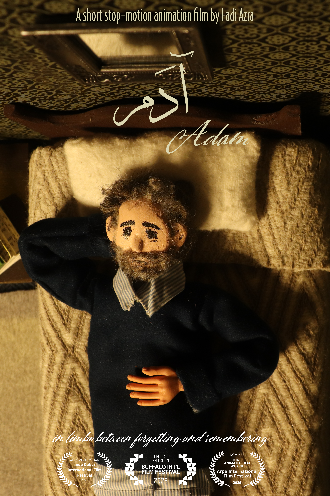
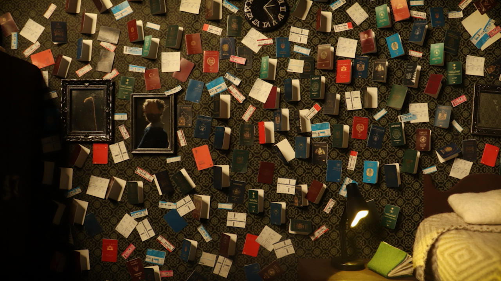
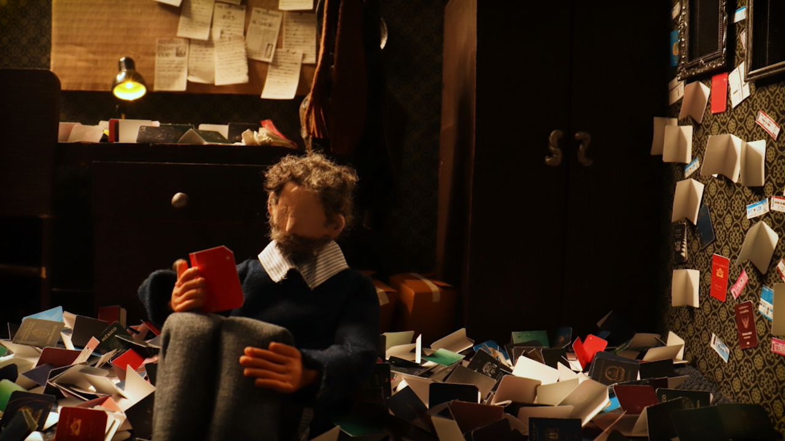
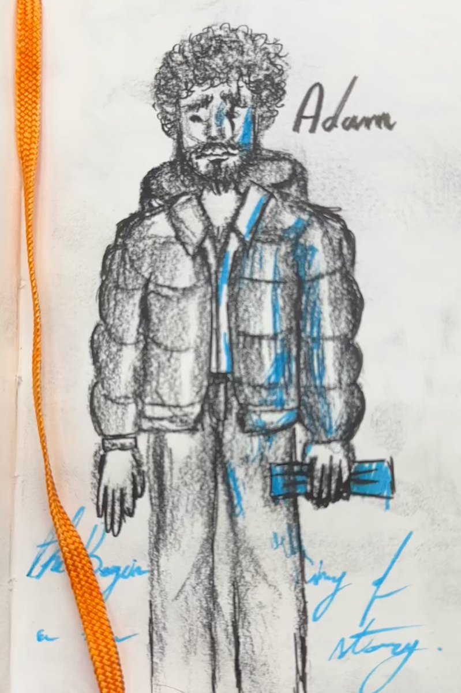
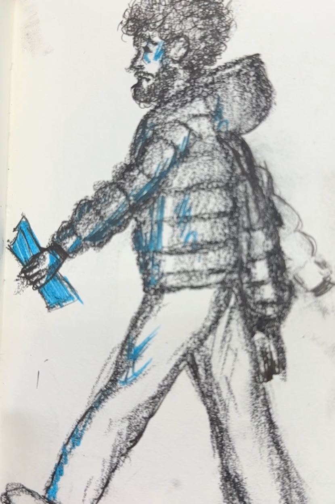
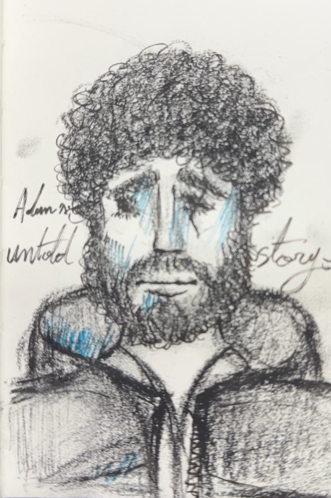
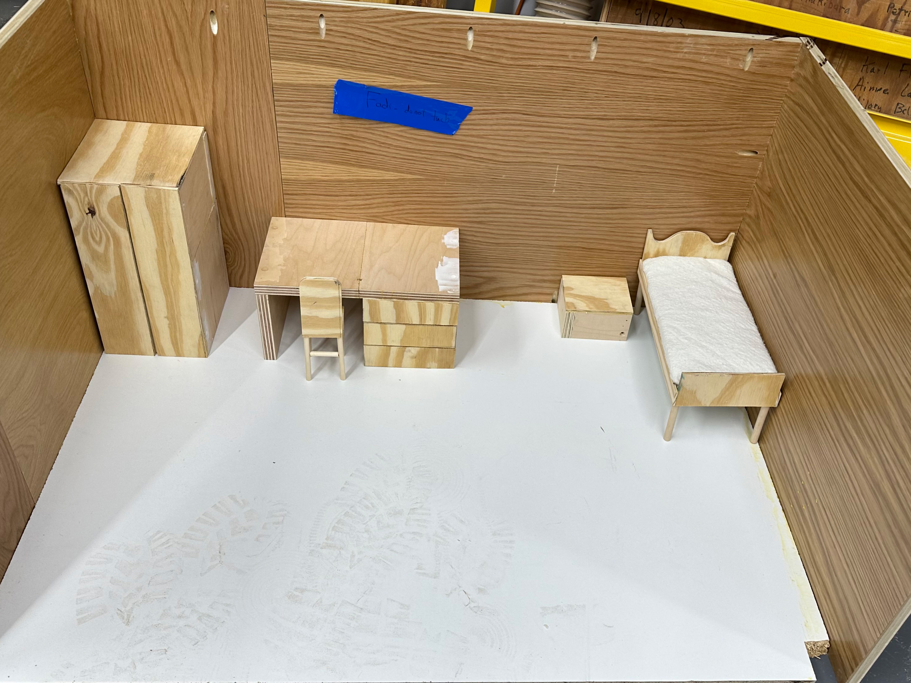
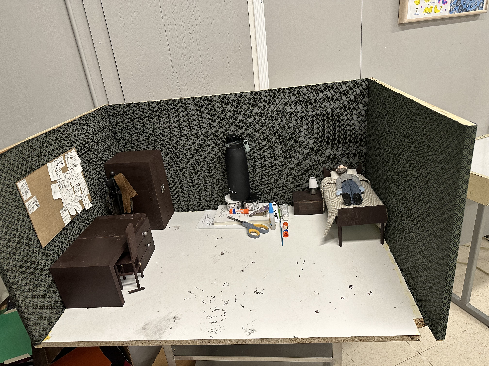
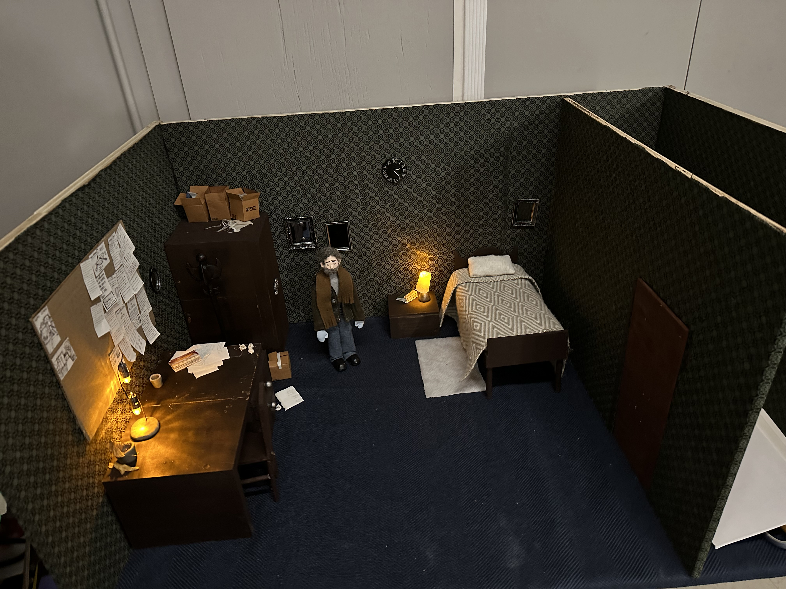
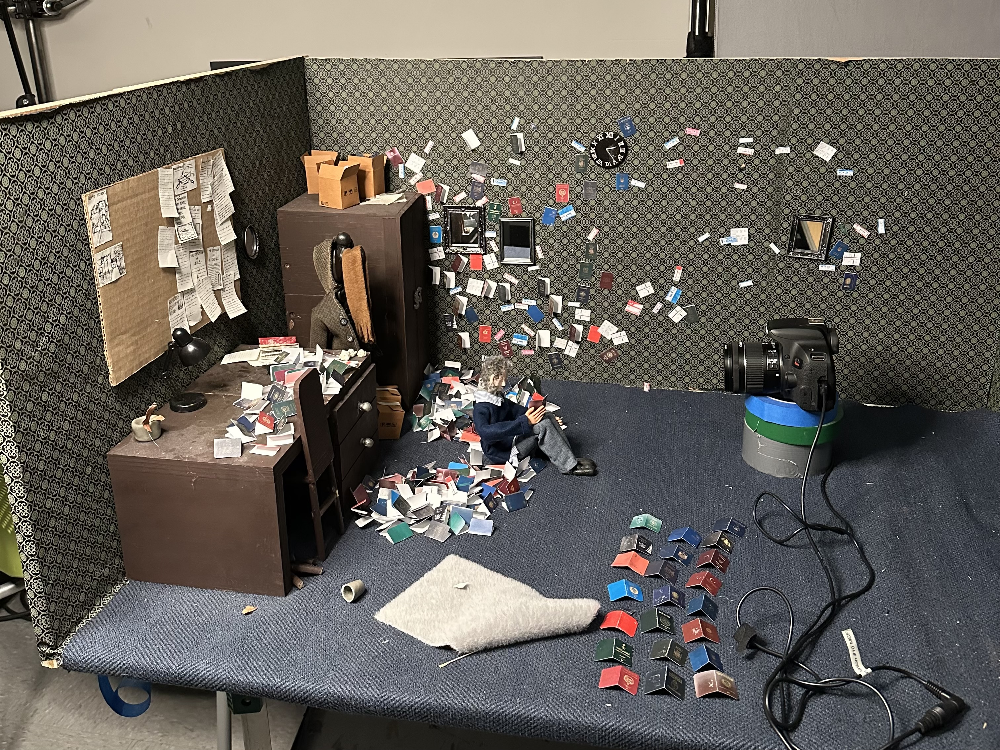

Adam (آدم)
About
Adam is a stop-motion short set within a bedroom where passports multiply and memories falter. It explores the fracture between past and present, belonging and loss, as identity is renegotiated in the space between remembering and forgetting.
Running time: 3:21 · Completion: May 2025 · Country: Syria / USA
Awards and Recognition
Best Animated Short Film — Indo/Dubai International Film Festival (Jul 2025)
Official Selection — Buffalo International Film Festival (Oct 12, 2025)
Official Selection & Nominee (Best Animated) — Arpa IFF, Hollywood (Sep 2025)
Outstanding Creative Achievement Award — SMFA at Tufts (2025)

Watch
Private screener (Vimeo): vimeo.com/1124508263
Password: Adam2025! — for festival/programmer viewing
Synopsis
Short: Adam wakes to a face without eyes and a self he no longer recognizes. As he searches for who he once was, he confronts the erosion of memory and the fear of losing where he belongs.
Long: When memory begins to fail us and our surroundings become the last anchors to identity, familiar objects turn into silent witnesses to who we once were. But what happens when even those tangible remnants begin to feel foreign? Adam unfolds in that liminal space — between remembering and forgetting — where the past flickers and the present remakes us.
About the Film
Adam takes place over a single night inside a modest bedroom. Passports appear and multiply, the bed becomes a site of haunting, and objects act as witnesses. The film is cut in gentle rhythms that echo how memory repeats and frays — returning to images until they change shape.
The work sits between realism and dream logic. Textures of wool, paper, and wood are foregrounded, and the camera lingers close to the puppet’s face and hands to hold the fragility of gestures. The score stays minimal, allowing small sounds — fabric, footsteps, breath — to carry meaning.


The Making of Adam
Puppet
I’ve been making dolls since I was six years old. In my first attempts, I melted plastic hangers to form joints, used eggshells for heads, and wrapped yarn around wire to create bodies. Later came my DIY fairy dolls that were crafted with wires, fake flowers, and scraps of fabric. So, when it came time to make Adam, it felt as if I had come full circle. Building him was one of my favorite parts of the entire filmmaking process.
The first sketch of Adam appeared one night during my first year of college. I had been thinking about what it meant to leave home — and the fear that, with time, I might begin to lose my memory of home. From that thought, and from the tears that followed, Adam was born.



The prototype version of Adam became my first real experiment in stop‑motion puppet building. As a college student with limited resources, I couldn’t afford a professional ball‑and‑socket skeleton, so I built his frame out of wire. After animating with him for a semester, I quickly learned the downsides — wires break easily and can’t hold consistent poses.
A year later, I received a small grant from my university — around $200 — which I used to invest in a proper ball‑and‑socket armature and hands. That upgrade transformed the puppet’s movement and durability, and from there, the final version of Adam came to life.
To bring Adam’s body to completion, I sculpted epoxy clay carefully around the skeleton, then wrapped it with a thin layer of fiber filling before dressing him. This layering gave him smooth, natural bends at the joints. His head was also made from epoxy sculpt, and I hand‑painted the face with acrylics. I hand‑sewed all of Adam’s clothes from scrap fabrics — his shirt, in fact, was made from one of my own striped shirts. That small detail mattered to me; I saw Adam as an extension of myself, and incorporating something of my own felt like giving him a part of my story.
Set
The elements of Adam’s world were handmade. The set’s furniture — the desk, bed, side table, closet, and walls — was built entirely from wood. I attached a metal sheet beneath the floor of the set, covered it with a thin layer of dark blue fabric, and placed small magnets inside Adam’s shoes to help control his steps during animation.



One of the most time‑consuming props was the stack of tiny passports that appears in the film. I gathered stock images of passports from countries all over the world, printed them on cardstock, and hand‑cut and folded each one. In total, I made about 500 miniature passports — a process that took nearly three weeks to complete.

The repetition and slowness of making those passports became an essential part of the process. When I thought about what forms someone’s identity, I realized how overwhelming it is — the countless elements that shape who we are. Each passport felt like a small fragment of that identity: what it could mean, what it could’ve meant, or what it might still mean in the future. That sense of fracture, confusion, and the constant re‑evaluation of identity found its way into the rhythm of my hands — sitting at a table, cutting these tiny, colorful papers that carried so much symbolic weight.